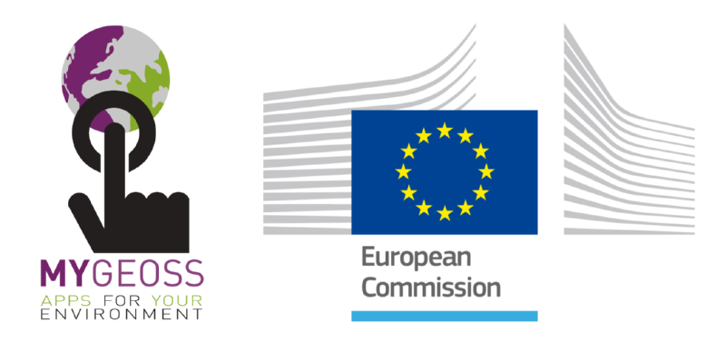

Welcome to Geoss2Go
Geoss2Go is a mobile application for Android that bases on Geopaparazzi and configures its use in specific sectors. Geopaparazzi is a mobile application for digital field mapping developed and maintained by HydroloGIS since 2005 with over 10000 users spread all over the world.
Through Geoss2Go a user can configure Geopaparazzi for the use of particular kind of data or mapping specific objects based on a personalized form. Geoss2Go sets and configures a Geopaparazzi environment or project ready to be used for a specific purpose (tourism, agriculture, risk management).
Geoss2Go establishes the connections and defines the parameters for the visualization of the layers that the provider of the application considers useful for the current survey depending on the type, argument and purpose of the survey i.e. the layers available to be shown in case of an agriculture application will be different from those available in case of risk management. The user can choose what to visualize and the definition of such a profile will personalize Geopaparazzi with the maps, forms and project specific for the current field survey.
Practically it will be possible to have several profiles on the phone each one activating a predefined set of parameters and connections for the main application Geopaparazzi. Additionally, Geopaparazzi will be used in the default way if none of these profiles is activated.

This application has been developed within the MyGEOSS project, which has received funding from the European Union’s Horizon 2020 research and innovation programme.
To unleash the power of this app you need to install also the digital field mapping app Geopaparazzi. To do so click here.
Support or Contact
If you have questions or problems with the app, please redirect them to the geopaparazzi mailinglist.